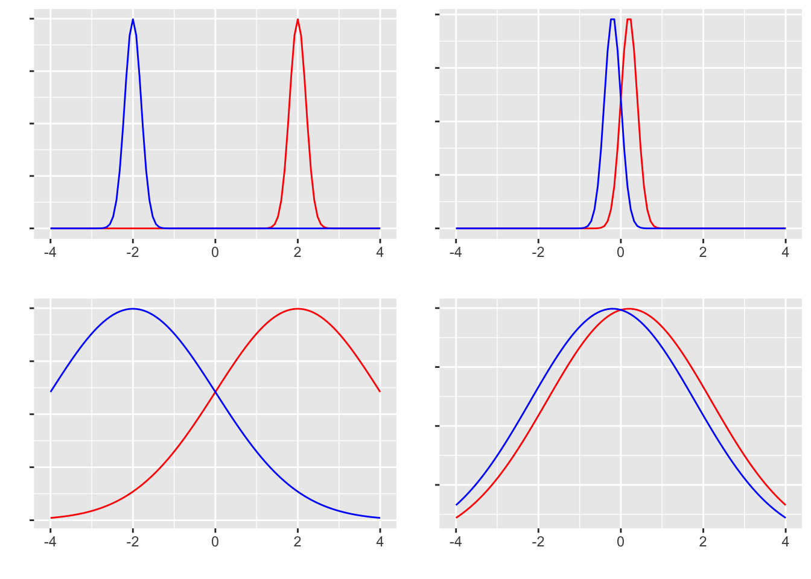

pacman::p_load(tidyverse)
set.seed(17)
n <- 10
mu <- 4
X <- rnorm(n, mean = mu, sd = 1)
print(X) [1] 2.984991 3.920363 3.767013 3.182732 4.772091 3.834388 4.972874 5.716534
[9] 4.255237 4.366581The test of a mean difference is one of the principal tools for drawing inferences from experimental designs. Random assignment cancels out individual differences and background factors, allowing the average causal effect to be assessed. Generalising the result still calls on the machinery of inferential statistics, and considerations of sample size and Type I/II error remain.
We begin with the one-sample test. It applies when one wishes to judge whether a sample mean is statistically distinguishable from some specified value — a known population mean, or a value posited by theory. For example, having collected responses on a 7-point Likert scale, one may ask whether the mean of an item is meaningfully different from the scale midpoint (4). Suppose we have ten Likert responses; we represent them by drawing ten normal variates with mean 4 and SD 1. In actual research these values would be observed responses on the scale.
pacman::p_load(tidyverse)
set.seed(17)
n <- 10
mu <- 4
X <- rnorm(n, mean = mu, sd = 1)
print(X) [1] 2.984991 3.920363 3.767013 3.182732 4.772091 3.834388 4.972874 5.716534
[9] 4.255237 4.366581The sample mean is 4.177. The question is whether values at least this extreme arise plausibly from a population with \(\mu = 4\). Walking through the NHST procedure:
The test-statistic computation and the decision are handled in one call to R’s t.test():
result <- t.test(X, mu = mu)
print(result)
One Sample t-test
data: X
t = 0.6776, df = 9, p-value = 0.5151
alternative hypothesis: true mean is not equal to 4
95 percent confidence interval:
3.585430 4.769131
sample estimates:
mean of x
4.177281 The realised test statistic is 0.678, and the probability of obtaining a value this extreme or more so from the \(t\) distribution with 9 degrees of freedom is 0.515. This exceeds 5%, so the result is not unusually rare: drawing a sample mean of 4.177 from a normal population with mean 4 is not surprising, and there is no statistically significant difference.
In a report, the result is conventionally written as “\(t(9) = 0.66776, p = 0.5151, \text{n.s.}\)”, where “n.s.” stands for not significant.
This example may feel circular: we drew from a normal with mean 4 and then concluded that the mean is not different from 4. But consider the next example:
n <- 3
mu <- 4
X <- rnorm(n, mean = mu, sd = 1)
mean(X) %>%
round(3) %>%
print()[1] 5.04result <- t.test(X, mu = mu)
print(result)
One Sample t-test
data: X
t = 5.1723, df = 2, p-value = 0.03541
alternative hypothesis: true mean is not equal to 4
95 percent confidence interval:
4.174825 5.904710
sample estimates:
mean of x
5.039768 With \(n = 3\) and a sample mean of 5.04, the \(t\) statistic exceeds the 5% critical value. The conclusion is that the observed value is too extreme to have come from a population with mean 4, so we reject the null. The simulation used \(\mu = 4\), but a small sample drawn from that population can wander far from the population mean.
Now consider the two-sample test, used to compare the mean of an experimental group against that of a control group, capitalising on random assignment to estimate the average causal effect. The null is “no group difference”; the alternative is its negation. Assuming samples from normal populations, the test statistic again follows a \(t\)-distribution.
Walking through the procedure:
To check this, generate synthetic data. Let n1 and n2 be the per-group sample sizes (here both equal to 10 for simplicity). Set \(\mu_1\) as the population mean of group 1 and write \(\mu_2 = \mu_1 + \delta\); with \(\delta = 0\) the means are equal, and with \(\delta \neq 0\) they differ. Finally, set the population SD for both groups.
The test asks whether the observed difference \(d\) could plausibly have arisen from a population in which the mean difference is zero. The test statistic \(T\) is
\[ T = \frac{d - \mu_0}{\sqrt{U^2_p \cdot \frac{n_1 + n_2}{n_1 n_2}}}\]
where \(d\) is the difference of the two sample means and \(U^2_p\) is the pooled unbiased variance — an estimate of the common population variance pooled across both groups. With \(S^2_1\) and \(S^2_2\) as the two sample variances,
\[ U^2_p = \frac{n_1 S^2_1 + n_2 S^2_2}{n_1 + n_2 - 2}. \]
In essence: weight each sample variance by its sample size, then divide by \(n_1 + n_2 - 2\) to obtain an unbiased pooled estimate.
A concrete numerical example. Generate the data, inspect the sample means, then run t.test():
n1 <- 10
n2 <- 10
mu1 <- 4
sigma <- 1
delta <- 1
mu2 <- mu1 + (sigma * delta)
set.seed(42)
X1 <- rnorm(n1, mean = mu1, sd = sigma)
X2 <- rnorm(n2, mean = mu2, sd = sigma)
X1 %>%
mean() %>%
round(3) %>%
print()[1] 4.547X2 %>%
mean() %>%
round(3) %>%
print()[1] 4.837result <- t.test(X1, X2, var.equal = TRUE)
print(result)
Two Sample t-test
data: X1 and X2
t = -0.49924, df = 18, p-value = 0.6237
alternative hypothesis: true difference in means is not equal to 0
95 percent confidence interval:
-1.506473 0.927980
sample estimates:
mean of x mean of y
4.547297 4.836543 We set \(\mu_1 = 4\) and \(\mu_2 = 4 + 1\), but the sample means are 4.547 and 4.837 — not strikingly different in this draw. The \(t\) statistic is 0.4992369, with $p = $ 0.6236593 on 18 degrees of freedom; above the 5% threshold, so we fail to reject the null.
By construction the population means do differ (\(4 \neq 4 + 1\)); this is a misjudgement, a Type II error. In actual research we do not know the population means, so we cannot tell whether such an error has occurred.
In the example above we created two separate objects X1 and X2 to make the two groups explicit. In practice the grouping is usually a variable inside a data frame, and the test is written with R’s formula interface:
dataSet <- data.frame(group = c(rep(1, n1), rep(2, n2)), value = c(X1, X2)) %>%
mutate(group = as.factor(group))
t.test(value ~ group, data = dataSet, var.equal = TRUE)
Two Sample t-test
data: value by group
t = -0.49924, df = 18, p-value = 0.6237
alternative hypothesis: true difference in means between group 1 and group 2 is not equal to 0
95 percent confidence interval:
-1.506473 0.927980
sample estimates:
mean in group 1 mean in group 2
4.547297 4.836543 The call to t.test() above used the option var.equal = TRUE, assuming the two groups share a common variance. The original \(t\)-test does assume equal variances, but in practice this assumption cannot be taken for granted. The standard preliminary check is Levene’s test for equality of variances; in R, the car and lawstat packages provide implementations. Below we use leveneTest() from car:
pacman::p_load(car)
leveneTest(value ~ group, data = dataSet, center = mean)Levene's Test for Homogeneity of Variance (center = mean)
Df F value Pr(>F)
group 1 2.9405 0.1035
18 The \(p\)-value is too large to reject the null of equal variances, so we may proceed under the equal-variance assumption. If Levene’s test were significant, the equal-variance assumption would have to be dropped. Doing so in t.test() is trivial — set var.equal = FALSE:
result2 <- t.test(value ~ group, data = dataSet, var.equal = FALSE)
print(result2)
Welch Two Sample t-test
data: value by group
t = -0.49924, df = 13.421, p-value = 0.6257
alternative hypothesis: true difference in means between group 1 and group 2 is not equal to 0
95 percent confidence interval:
-1.5369389 0.9584459
sample estimates:
mean in group 1 mean in group 2
4.547297 4.836543 The output title now reads “Welch Two Sample t-test” — the \(t\)-test with Welch’s correction. Note also that the degrees of freedom are now non-integer (13.421). Welch’s correction adjusts the degrees of freedom to compensate for unequal variances. A report would write “\(t(\) 13.421 \()=\) -0.499, \(p=\) 0.626”; the non-integer degrees of freedom signal that Welch’s correction has been applied.
Equality of variances is a special case of the more general (unequal-variance) scenario, so it is reasonable to run Welch’s test from the start. R’s t.test() defaults to var.equal = FALSE accordingly: unless told otherwise it does not assume equal variances. This is preferable because it avoids the multiplicity of running an auxiliary equal-variance test.
In the example above the synthetic data had \(\mu_1 = 4\) and \(\mu_2 = \mu_1 + \sigma d\), so \(\mu_1 \neq \mu_2\) by construction — yet we failed to detect the difference. Statistical significance is a statistical matter; what we usually want to know in substantive research is whether there is a real, substantive difference. Making “obtain a significant result” the goal of an analysis is therefore plainly the wrong objective.1
When can we say firmly that there is a difference? The four panels of distributions below clarify the answer:

The left column shows pairs with a large mean difference, the right column small. The top row shows small variances, the bottom row large. In which of the four panels is “the two groups differ” most defensible?
The top-left case is the clearest: the two groups are obviously separated, with negligible overlap. The bottom-left case has the same mean difference but much wider within-group spread, so the groups overlap and many individuals fall in the region the verdict “different” would not apply to. The top-right case has minimal overlap but a small mean difference, so it is borderline. The bottom-right case has both a small difference and large overlap; a verdict of “different” would have many exceptions. Take the claim that “men are stronger than women” (a difference in body strength on average): even if true on average, there are surely many men weaker than many women. When the exceptions are this prevalent, a statistically significant difference would not feel meaningful.
The point: judging whether groups differ depends not just on the mean difference but also on the variance. The standardised difference — the mean difference divided by the standard deviation — is therefore central. This is the effect size.2
The data above used \(\mu_2 - \mu_1 = \sigma d\); the effect size for a mean difference is
\[ es = \frac{\mu_1 - \mu_2}{\sigma}, \]
so the \(d\) in the simulation was exactly the effect size. In real data the population mean and SD are unknown and the effect size must be estimated from the sample. R’s effsize package provides routines for this:
pacman::p_load(effsize)
cohen.d(value ~ group, data = dataSet)
Cohen's d
d estimate: -0.2232655 (small)
95 percent confidence interval:
lower upper
-1.165749 0.719218 cohen.d(value ~ group, data = dataSet, hedges.correction = TRUE)
Hedges's g
g estimate: -0.2138318 (small)
95 percent confidence interval:
lower upper
-1.1162608 0.6885973 After a mean-difference test it is standard practice to also report an effect size such as Cohen’s \(d\) or Hedges’s \(g\).
When the two groups are not independent — as in a pre/post within-subjects design — the formulation of the \(t\)-test changes. For independent samples we considered the distribution of the difference of group means, \(\mu_1 - \mu_2\). For paired samples we consider the per-individual difference \(X_{i1} - X_{i2} = D_i\). Testing this one statistic makes the paired test a special case of the one-sample test. The standard error of \(D\) is estimated as \(U_D / \sqrt{n}\), where \(U_D\) is the sample SD of the differences.3 The test statistic \(T\) is
\[ T = \frac{\bar{D}}{U_D/\sqrt{n}} = \frac{\sum D_i/n}{\sqrt{\frac{\frac{1}{n-1}\sum(D_i-\bar{D})^2}{n}}}.\]
In t.test(), set paired = TRUE.
Two approaches are common for generating paired-sample synthetic data. The first models a generative process directly:
n <- 10
mu1 <- 4
sigma <- 1
d <- 1
X1 <- rnorm(n, mu1, sigma)
X2 <- X1 + sigma * d + rnorm(n, 0, sigma)
t.test(X1, X2, paired = TRUE)
Paired t-test
data: X1 and X2
t = -1.8036, df = 9, p-value = 0.1048
alternative hypothesis: true mean difference is not equal to 0
95 percent confidence interval:
-1.4339112 0.1617193
sample estimates:
mean difference
-0.6360959 Group 1 is sampled around its mean \(\mu_1\); group 2 is obtained by adding a constant effect \(\sigma d\) to each value of group 1, plus additional measurement noise. This mirrors a concrete data-generation story, but the noise is in some sense double-counted.
The second approach generalises beyond pre/post designs to any setting that has “pairing.” Pairing means the two values are drawn jointly from a bivariate normal — i.e., each variable is normally distributed and the two are correlated. The univariate normal is \[X \sim N(\mu, \sigma),\] while the multivariate normal — generating several variables jointly — is written \[ \mathbf{X} \sim MVN(\mathbf{\mu}, \mathbf{\Sigma}),\]
where \(\mathbf{X}\) and \(\mathbf{\mu}\) are \(n\)-vectors and \(\mathbf{\Sigma}\) is the variance–covariance matrix. In the bivariate case,
\[\mathbf{\Sigma} = \begin{pmatrix} \sigma_1^2 & \sigma_{12}\\ \sigma_{21} & \sigma_2^2 \end{pmatrix} = \begin{pmatrix} \sigma_1^2 & \rho_{12}\sigma_1\sigma_2 \\ \rho_{21}\sigma_2\sigma_1 & \sigma_2^2 \end{pmatrix}.\]
The off-diagonal covariance \(\sigma_{ij}\) can be written in terms of the correlation \(\rho_{ij}\); thus the data-generation process explicitly encodes a between-variable correlation. Synthetic data on this model:
pacman::p_load(MASS) # for multivariate normal random numbers
n <- 10
mu1 <- 4
sigma <- 1
d <- 1
mu <- c(mu1, mu1 + sigma * d)
rho <- 0.4
SIG <- matrix(c(sigma^2, rho * sigma * sigma, rho * sigma * sigma, sigma^2), ncol = 2, nrow = 2)
X <- mvrnorm(n, mu, SIG)
t.test(X[, 1], X[, 2], paired = TRUE)
Paired t-test
data: X[, 1] and X[, 2]
t = -2.4313, df = 9, p-value = 0.0379
alternative hypothesis: true mean difference is not equal to 0
95 percent confidence interval:
-1.96934592 -0.07095313
sample estimates:
mean difference
-1.02015 Effect sizes are computed as for the independent-samples case:
cohen.d(X[, 1], X[, 2])
Cohen's d
d estimate: -1.04088 (large)
95 percent confidence interval:
lower upper
-2.04204357 -0.03971697 cohen.d(X[, 1], X[, 2], hedges.correction = TRUE)
Hedges's g
g estimate: -0.9968994 (large)
95 percent confidence interval:
lower upper
-1.9510179 -0.0427809 So far we have used hypotheses of the form “is there a difference?” The question of whether the difference is in the positive or negative direction has not been at issue; the test statistic’s distribution has been used with the two tails combined to define the significance level.
In a pre/post experiment, however, the direction — has performance improved, or deteriorated? — is often the substantive question. An effect that is the wrong sign may be no use. For a directional hypothesis only one tail of the test statistic’s distribution is relevant. In t.test(), the alternative option encodes this.
Setting t.test(x, y, alternative = "less") tests the null against \(x < y\); alternative = "greater" tests against \(x > y\). The default is alternative = "two.sided" — a two-tailed test.
One subtlety: moving from two-tailed to one-tailed lowers the critical value the test statistic must exceed. A one-tailed test is therefore a less conservative test. Some take the view that defaulting to two-tailed is sufficiently strict to be safe; the better practice is to use the null hypothesis appropriate to the research question.
Draw 30 samples from a normal with mean 50 and SD 10, and test whether the sample mean differs from the population mean. Report the result using the conventions of the Japanese Psychological Association’s Manual for the Preparation and Submission of Papers.
Use the data below to test whether the means of two independent groups differ. Report the result in the same convention. \[ group1 = \{45, 50, 55, 60, 65\} \] \[ group2 = \{57, 60, 62, 77, 75\} \]
Practise the paired-samples \(t\)-test using bivariate-normal synthetic data. With \(n = 20\), mean vector \(\mu = (12, 15)\), and covariance matrix \(\Sigma = \begin{pmatrix} 4 & 2.8 \\ 2.8 & 4\end{pmatrix}\), generate the sample and run the paired test. Report the result in the same convention.
Plot the \(t\)-density for \(\mathrm{df} = 10, 20, 30\) alongside the standard-normal density. How does the \(t\)-distribution change as the degrees of freedom increase?
For a \(t\)-distribution with 15 degrees of freedom, compute the critical values (theoretical thresholds for the decision) at the 5% level for one-tailed and two-tailed tests.
In, say, physics, measurement precision is high and one is examining a single physical world: there is no need to reason probabilistically about whether predictions are true or false. In such a setting — let us call it a world of clear theoretical truth — information about statistical significance is at most a supplementary device for supporting a theory, and reporting test results is largely a rhetorical convention for writing papers. The verification of Newton’s laws or Einstein’s relativity hinges on whether measured values agree with theoretical predictions within the measurement error; statistical significance is, at best, a secondary concern. Psychology, dealing with small human samples, has little choice but to rely on statistical adjudication. But that should not let us forget that the substantive difference is what really matters.↩︎
Substantive difference is more meaningful than effect size, and effect size more meaningful than statistical significance. See 豊田 (2009) for an extended treatment.↩︎
Since the design is paired, \(n\) is the same on both occasions.↩︎